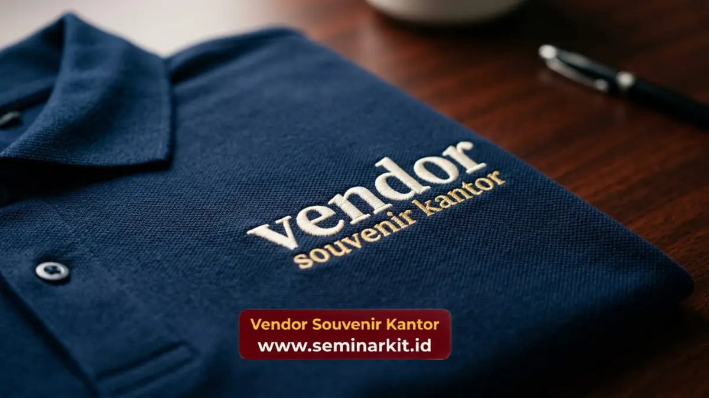

Vendor Souvenir Kantor menyediakan apparel custom logo berupa kemeja, polo shirt, dan jaket bordir yang siap dipesan untuk kebutuhan seragam karyawan kantor.
Variasi Apparel Custom Logo yang Tersedia untuk Karyawan
Vendor Souvenir Kantor menyediakan tiga jenis apparel custom logo utama yang paling banyak dipilih untuk kebutuhan seragam kantor.
- Kemeja formal custom logo untuk seragam front office dan tim manajemen.
- Polo shirt custom logo untuk kegiatan lapangan dan acara internal.
- Jaket bordir logo untuk identitas tim di luar ruangan maupun perjalanan dinas.
Setiap jenis apparel dapat dipesan dengan variasi warna dan ukuran yang menyesuaikan standar seragam masing-masing divisi di perusahaan.
Teknik Bordir dan Sablon Logo pada Apparel Kerja
Teknik bordir dan sablon logo dari Vendor Souvenir Kantor dipilih sesuai jenis kain dan tingkat ketahanan yang dibutuhkan apparel kerja harian.
Bordir logo umum digunakan pada kemeja dan jaket karena memberikan tampilan yang lebih rapi dan tahan lama dibandingkan sablon.
Sementara itu, sablon logo lebih sering dipilih untuk polo shirt dengan desain warna yang lebih kompleks atau membutuhkan gradasi warna tertentu.
Pemilihan teknik yang tepat membantu logo perusahaan tetap terlihat jelas meskipun apparel dicuci berulang kali selama masa pemakaian sehari-hari oleh karyawan.
Perusahaan juga dapat berkonsultasi mengenai posisi peletakan logo, baik pada bagian dada, lengan, maupun bagian punggung apparel.
Pemilihan Bahan Apparel untuk Kenyamanan Kerja Harian
Bahan apparel seperti katun combed dan drill dipilih Vendor Souvenir Kantor agar nyaman digunakan karyawan sepanjang jam kerja kantor maupun lapangan.
Katun combed umum digunakan untuk polo shirt karena teksturnya yang lembut dan menyerap keringat, sedangkan bahan drill lebih sering digunakan untuk kemeja formal karena tampilannya yang rapi dan tidak mudah kusut.
Untuk jaket, bahan parasut atau fleece dipilih agar tetap nyaman digunakan pada kondisi cuaca yang lebih dingin.
Perusahaan dengan kebutuhan seragam untuk tim lapangan biasanya memilih kombinasi bahan yang lebih tebal dan tahan terhadap kondisi kerja outdoor dibandingkan tim yang bekerja di dalam ruangan kantor.
Faktor ketahanan bahan terhadap paparan matahari dan keringat juga menjadi pertimbangan penting bagi tim yang sering bertugas di lapangan sepanjang hari.

Pemesanan Apparel dalam Jumlah Besar untuk Seluruh Karyawan
Vendor Souvenir Kantor melayani pemesanan apparel custom logo dalam jumlah besar dengan proses produksi yang disesuaikan jadwal kebutuhan seragam perusahaan.
Perusahaan dengan jumlah karyawan yang cukup banyak dapat memesan apparel secara bertahap sesuai kebutuhan divisi, tanpa mengurangi konsistensi warna dan kualitas bordir pada setiap batch produksi.
Ukuran apparel juga dapat disesuaikan dengan data ukuran karyawan yang dikumpulkan sebelum proses produksi dimulai, sehingga distribusi seragam dapat dilakukan secara lebih efisien setelah barang selesai diproduksi.
Estimasi waktu pengerjaan disesuaikan dengan jumlah pesanan dan tingkat kerumitan desain logo, sehingga perusahaan disarankan melakukan pemesanan lebih awal untuk kebutuhan seragam tahunan.
Kombinasi Warna Apparel Sesuai Identitas Brand Perusahaan
Kombinasi warna apparel disesuaikan dengan identitas visual perusahaan agar tampilan seragam karyawan tetap konsisten dengan merchandise lain yang digunakan.
Warna dasar apparel biasanya dipilih mengikuti warna korporat utama perusahaan, sementara aksen warna kedua digunakan pada bagian kerah, lengan, atau garis jahitan tertentu.
Kombinasi ini membantu seragam terlihat lebih menarik tanpa menghilangkan kesan profesional yang dibutuhkan di lingkungan kerja kantor.
Perusahaan dengan lebih dari satu divisi juga dapat memilih variasi warna berbeda untuk membedakan tim, misalnya warna tertentu untuk tim operasional dan warna lain untuk tim manajemen, tanpa mengubah posisi dan ukuran logo pada apparel.
Pendekatan ini memudahkan identifikasi peran karyawan sekaligus menjaga keseragaman identitas brand di seluruh divisi perusahaan.
Pesan Apparel Custom Logo di Vendor Souvenir Kantor
Wujudkan tampilan seragam karyawan yang lebih profesional dan konsisten dengan apparel custom logo dari Vendor Souvenir Kantor.
Hubungi tim kami sekarang untuk konsultasi bahan, desain bordir, dan penjadwalan produksi sesuai kebutuhan perusahaan Anda.

Banner promosi: klik gambar untuk langsung terhubung ke WhatsApp tim sales.